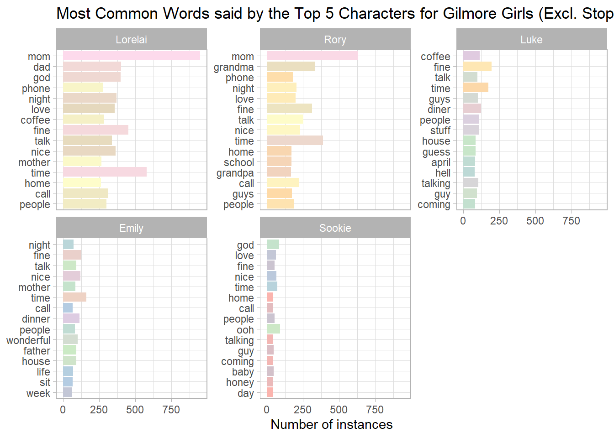
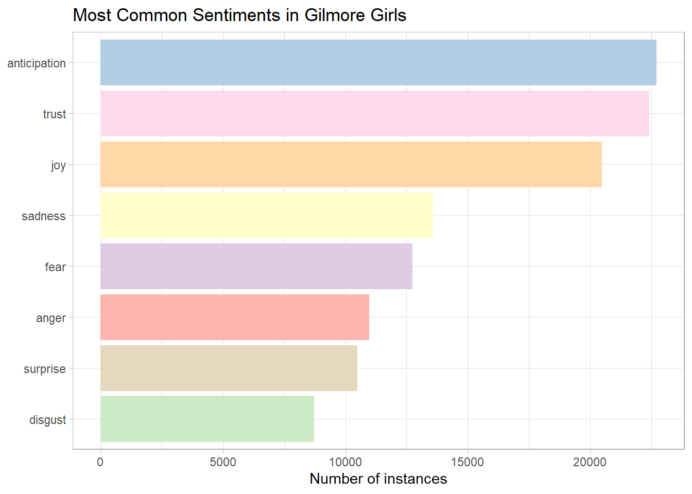

Sentiment Comparison Between Popular TV Shows
Intro
What makes a TV show popular? While that is a multifaceted question with no straightforward answer, we wanted to find similarities and differences between three vastly different successful TV shows (Gilmore Girls, Euphoria, South Park) to see what makes them so popular. We will be doing text and sentiment analysis, while also giving our own interpretations (as we have seen these shows) as to why these words / sentiments might resonate with viewers
Content
You can include text, code, and output as usual. Remember to take full advantage of Markdown and its syntax shortcuts.
##Summaries of Each Show IN EACH SECTION PUT 2-3 SENTENCES ABOUT EACH SHOW LIKE INFO ABOUT WHEN IT WAS MADE, SUMMARIES, HOW MANY SEASONS/EPISODES
###Gilmore Girls Gilmore girls is a ____
###Euphoria Euphoria is a ____
###South Park South Park is a ____
Faceting Formatting of Most Common Words
Gilmore Girls
Euphoria

South Park

Most Common Words
EXPLAIN THIS ### Gilmore Girls

Euphoria

South Park


By Top 5 Characters
EXPLAIN TOP 5 CHARACTERS
Gilmore Girls

Euphoria


South Park
Insert
Most Common Words by Sentiment
EXPLAIN THIS!
###Gilmore Girls

Euphoria
Insert
South Park
Insert
Sentiment Analysis
EXPLAIN OUR SENTIMENT ANALYSIS
###Gilmore Girls

The mean positivity value of Gilmore Girls is 0.2181001Euphoria
Insert
South Park

[1] NA| Character | Filtered Words | Unfiltered Words | % of all Filtered words | % of all Unfiltered words |
|---|---|---|---|---|
| Cartman | 43869 | 140919 | 15.43 | 15.55 |
| Kenny | 1430 | 4461 | 0.50 | 0.49 |
| Kyle | 18986 | 67360 | 6.68 | 7.43 |
| Stan | 19767 | 69018 | 6.95 | 7.61 |
South Park by Character
Each character is a key component

# A tibble: 1 × 1
mean_cartman
<dbl>
1 NA
# A tibble: 1 × 1
mean_kenny
<dbl>
1 NA
# A tibble: 1 × 1
mean_stan
<dbl>
1 NA
# A tibble: 1 × 1
mean_kyle
<dbl>
1 NAAll three shows (should be on the top)
All three shows for quick first analyses, and then comparative analyses


Examples and additional guidance are provided below.
Take note of the the default code chunk options in the setup code chunk. For example, unlike the rest of the qmd files we worked in this semester, the default code chunk option is echo = FALSE, so you will need to set echo = TRUE for any code chunks you would like to display in the blog. You should be thoughtful and intentional about the code you choose to display.
Links
You can include links using Markdown syntax as shown.
You should include links to relevant sites as you write. You should additionally include a list of references as the end of your blog with full citations (and relevant links).
Visualizations
Visualizations, particularly interactive ones, will be well-received. That said, do not overuse visualizations. You may be better off with one complicated but well-crafted visualization as opposed to many quick-and-dirty plots. Any plots should be well-thought-out, properly labeled, informative, and visually appealing.
If you want to include dynamic visualizations or tables, you should explore your options from packages that are built from htmlwidgets. These htmlwidgets-based packages offer ways to build lighterweight, dynamic visualizations or tables that don’t require an R server to run! A more complete list of packages is available on the linked website, but a short list includes:
- plotly: Interactive graphics with D3
- leaflet: Interactive maps with OpenStreetMap
- dygraphs: Interactive time series visualization
- visNetwork: Network graph visualization vis.js
- sparkline: Small inline charts
- threejs: Interactive 3D graphics
You may embed a published Shiny app in your blog if useful, but be aware that there is a limited window size for embedded objects, which tends to makes the user experience of the app worse relative to a dedicated Shiny app page. Additionally, Shiny apps will go idle after a few minutes and have to be reloaded by the user, which may also affect the user experience.
Any Shiny apps embedded in your blog should be accompanied by the link to the published Shiny app (I did this using a figure caption in the code chunk below, but you don’t have to incorporate the link in this way).
Tables
DT package
The DT package is great for making dynamic tables that can be displayed, searched, and filtered by the user without needing an R server or Shiny app!
Note: you should load any packages you use in the setup code chunk as usual. The library() functions are shown below just for demonstration.
library(DT)
mtcars |>
select(mpg, cyl, hp) |>
datatable(colnames = c("MPG", "Number of cylinders", "Horsepower"),
filter = 'top',
options = list(pageLength = 10, autoWidth = TRUE))kableExtra package
You can also use kableExtra for customizing HTML tables.
library(kableExtra)
summary(cars) |>
kbl(col.names = c("Speed", "Distance"), row.names = FALSE) |>
kable_styling(bootstrap_options = "striped", full_width = FALSE) |>
row_spec(0, bold = TRUE) |>
column_spec(1:2, width = "1.5in") | Speed | Distance |
|---|---|
| Min. : 4.0 | Min. : 2.00 |
| 1st Qu.:12.0 | 1st Qu.: 26.00 |
| Median :15.0 | Median : 36.00 |
| Mean :15.4 | Mean : 42.98 |
| 3rd Qu.:19.0 | 3rd Qu.: 56.00 |
| Max. :25.0 | Max. :120.00 |
Images
Images and gifs can be displayed using code chunks:


You may also use Markdown syntax for displaying images as shown below, but code chunks offer easier customization of the image size and alignment.

Either way, the file path can be a local path within your project directory or a URL for an image hosted online. This syntax works for PNG, PDF, JPG, and even GIF formats.
Equations
You might include equations if part of the purpose of your blog is to explain a statistical method. There are two ways to include equations:
- Inline: \(b \sim N(0, \sigma^2_b)\)
- Display-style (displayed on its own line): \[\frac{\sigma^2_b}{\sigma^2_b + \sigma^2_e}\]
For typesetting equations appropriately, check out the AMS-LaTeX quick reference or take a look at the Symbols in math mode section of this cheat sheet (or do some extra Googling—there are many resources).
Formatting
Tabbed subsections
Each subsection below the “Tabbed subsections” section heading will appear in a tab. See R Markdown Cookbook Section 7.6: Put content in tabs for additional customization options.
Bulleted list
You can make a bulleted list like this:
- item 1
- item 2
- item 3
Numbered list
You can make a numbered list like this
- First thing I want to say
- Second thing I want to say
- Third thing I want to say
Customizing your blog design
As a final detail only if you have time, you can explore options for customizing the style of your blog. By default, we are using the cosmo theme from Bootswatch themes (see Line 7 of this file if you want to switch out themes).
Theme
There are 25 Bootswatch themes included with Quarto. You can change the theme easily by specifying one of these themes on Line 7:
- default
- cerulean
- cosmo
- cyborg
- darkly
- flatly
- journal
- litera
- lumen
- lux
- materia
- minty
- morph
- pulse
- quartz
- sandstone
- simplex
- sketchy
- slate
- solar
- spacelab
- superhero
- united
- vapor
- yeti
- zephyr
There are, I’m sure, many more similar packages with built in themes, or you can look into how to include a CSS code chunk to customize aspects of a theme.
Synax highlighting
You can also change the code chunk syntax highlighting option (Line 7, highlight):
"default""tango""pygments""kate""monochrome""espresso""zenburn""haddock""textmate"NULLfor no syntax highlighting (not recommended)
Font size, type, and other customization
Further customization requires adding a CSS style file or code chunk or incorporating other development options. Further customization should be your lowest and final priority for the project. Ensure your content is fully prepared first.
References
All data sources, any key R packages, and any other sources used in developing your blog should be cited in full in a list of references at the end of your blog. Your blog post should also link to these sources as they are discussed. You may choose any reference style as long as sources are fully cited (try to be consistent!).
Typically, references in R Markdown (and LaTeX) files are incorporated with a BibTeX database (a .bib file). You can try this approach or manually include either a numbered or alphabetized list.
Columbia University has compiled some guidance on how to cite data. Some data sources will give you the citation information to copy and paste. Use the provided citations or citation styles in those cases.
You can list R package citations with the code citation("packageName") in the console and then copy (and reformat as needed) the relevant text, e.g.,
To cite package 'DT' in publications use:
Xie Y, Cheng J, Tan X (2023). _DT: A Wrapper of the JavaScript
Library 'DataTables'_. R package version 0.29,
<https://CRAN.R-project.org/package=DT>.
A BibTeX entry for LaTeX users is
@Manual{,
title = {DT: A Wrapper of the JavaScript Library 'DataTables'},
author = {Yihui Xie and Joe Cheng and Xianying Tan},
year = {2023},
note = {R package version 0.29},
url = {https://CRAN.R-project.org/package=DT},
}The following citations are based on the American Statistical Association citation style (not all of these references are used in this document).:
Baumer, B. S., Kaplan, D. T., and Horton, N. J. (2021), Modern Data Science with R (2nd ed.), Boca Raton, FL: CRC Press.
Broman, K. W. and Woo, K. H. (2018), “Data Organization in Spreadsheets,” The American Statistician, 72:1, 2-10, doi: 10.1080/00031305.2017.1375989
Columbia University Libraries (n.d.), “Data Citation,” available at https://guides.library.columbia.edu/datacitation.
McNamara, A. and Horton N. J. (2018) “Wrangling Categorical Data in R,” The American Statistician, 72:1, 97-104, doi: 10.1080/00031305.2017.1356375.
Shah, Syed A. A. (October 2022), “Starbucks Drinks” (Version 1), Kaggle, available at https://www.kaggle.com/datasets/syedasimalishah/starbucks-drinks.
Xie Y, Cheng J, Tan X (2022). “DT: A Wrapper of the JavaScript Library ‘DataTables’,” R package version 0.24, available at https://CRAN.R-project.org/package=DT.